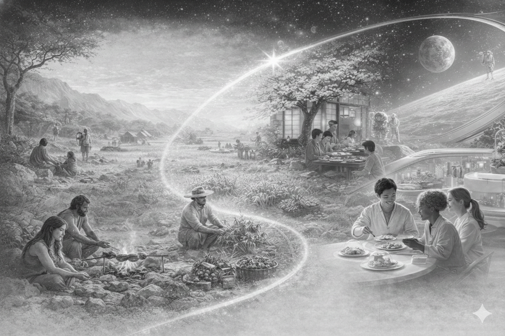

MISSION
「育てる」文化を宇宙へ。
人類は農耕革命を経て、作物を「育てる」こと、発酵や熟成を「待つ」こと、そしてその恵みを「分かち合う」ことで、豊かな文化と絆を築いてきました。Zymbloomは、この“育てる”という根源的な体験を、宇宙という新たな環境にも広げます。
宇宙でも、変化を楽しみ、待ち、分かち合うことで、未来の文化を育みます。

食と体験の歴史
-
狩猟採集時代 協力して食を分かち合う体験が、人と人との絆や文化の原点となった。
-
農耕革命 人類は「育てる」ことを覚え、作物の成長を待ち、収穫の喜びを分かち合う文化が生まれた。
-
発酵・育成文化 発酵や育成を通じて、待つ・育てる・変化を楽しむ体験が、日常や行事の中に根付いていった。
-
宇宙での新しい育てる文化 宇宙でも「待つ・育てる・分かち合う」体験を通じて、新たな文化や価値を育む。
それが Zymbloom の提案です。

VISION
宇宙で“育てる”体験が、新しい文化を紡ぐ。
宇宙という新しい環境で、発酵や育成のように“育てる”体験を日常に取り入れることで、これまでにない絆や文化が芽生えます。Zymbloomは、宇宙でも人と人、時代と時代をつなぐ“育てる”文化を紡いでいきます。

VALUE
“育てる”ことで生まれる、日々の文化。
小さな変化や成長を楽しみ、仲間と分かち合うことで、宇宙でも新しい記憶や文化が芽生えます。続けることで、体験が深まり、未来の文化となっていきます。
VALUE 01
育てるリズムが、心をつなぐ
毎日の小さな育てる儀式が、宇宙での生活にリズムと心のゆとりをもたらし、文化の種となります。

VALUE 02
変化を分かち合い、育て合う
発酵や育成の変化をみんなで観察し、語り合うことで、自然な会話とつながりが生まれます。

VALUE 03
誰もが続けられる“育てる”体験
シンプルな仕組みで、誰もが無理なく“育てる”体験を続けられる。続けることで体験が深まり、文化となっていきます。